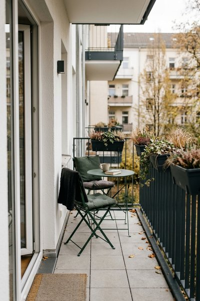
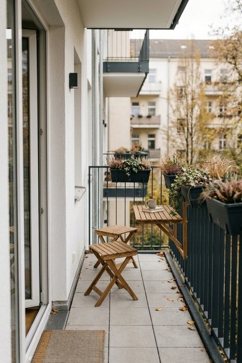
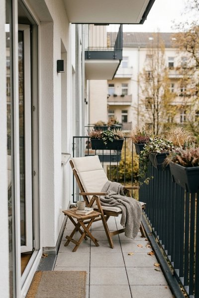

Klappmöbel für kleine Balkone: 3 Lösungen
Derselbe schmale Balkon, drei Möbel-Lösungen. Welche passt, hängt vor allem davon ab, wofür du den Balkon nutzt: zu zweit essen, kurz einen Kaffee trinken oder allein entspannen.



1. Klapp-Bistroset
Ein runder Tisch (ca. 60 cm) mit zwei Klappstühlen aus Metall. Der Klassiker für kleine Balkone.
Vorteile: zu zweit essen, stabil, im Winter flach zusammengeklappt.
Nachteile: braucht aufgestellt etwa 110 × 110 cm.
ca. 50–120 €
2. Geländertisch mit Hockern
Ein schmaler Klapptisch, der am Geländer eingehängt wird, dazu zwei Klapphocker.
Vorteile: braucht fast keinen Boden, ideal für sehr schmale Balkone.
Nachteile: Hocker sind weniger bequem, Tisch nur für Getränke und kleine Teller.
ca. 55–120 €
3. Klapp-Relaxsessel
Ein klappbarer Holzsessel mit verstellbarer Lehne und dicker Auflage, dazu ein Mini-Beistelltisch.
Vorteile: am bequemsten, zum Lesen und Entspannen.
Nachteile: nur für eine Person, Auflage muss bei Regen rein.
ca. 65–150 €
Vergleich auf einen Blick
| Bistroset | Geländertisch | Klappsessel | |
|---|---|---|---|
| Kosten | 50–120 € | 55–120 € | 65–150 € |
| Platz (aufgestellt) | ca. 110 × 110 cm | ca. 40 cm Tiefe | ca. 70 × 100 cm |
| Personen | 2 | 2 | 1 |
| Bequemlichkeit | mittel | gering | hoch |
| Zum Essen | ja | eingeschränkt | nein |
Richtwerte für Deutschland, Stand November 2026. Die Preise schwanken je nach Händler und Saison.
Welche Lösung passt zu dir?
Zu zweit frühstücken: Bistroset.
Balkon unter 1 m tief: Geländertisch. Mehr Ideen: Schmaler Balkon: 7 Ideen.
Allein lesen und entspannen: Klappsessel.
Häufige Fragen
Welches Material hält draußen am längsten?
Pulverbeschichtetes Metall und geöltes Akazienholz. Holz einmal im Jahr ölen, Metall ist pflegeleicht.
Wohin mit den Möbeln im Winter?
Zusammengeklappt an der Wand oder im Keller. Auflagen immer trocken lagern.